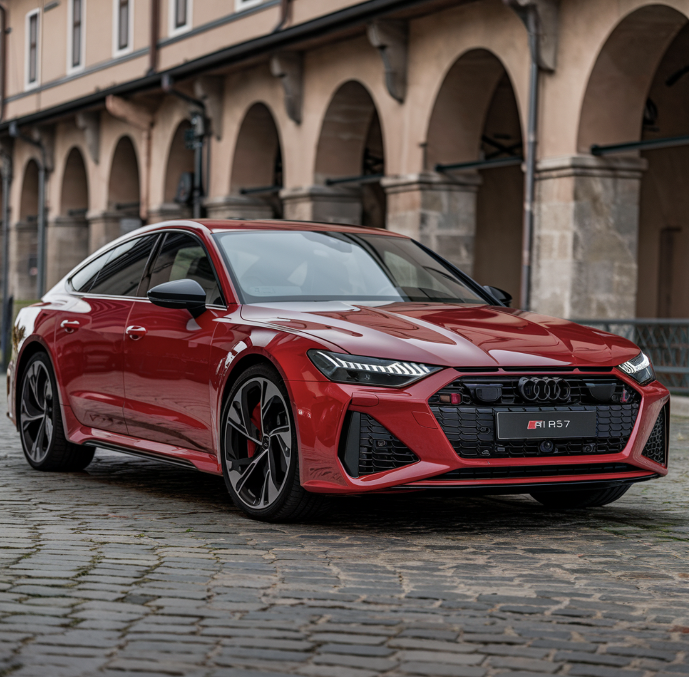

Audi RS7
This is my second favorite model! It's super sleek, and has a V8 engine and 621 HP. Honda's Civic Sport trim is actually modeled after the RS7. You'll see the resemblance instantly which is pretty cool. It's also more family friendly as in it's a 4-door (Audi R8 is a 2-door).